Inicio
En este recurso educativo podrás aprender sobre:
- Grado absoluto de un polinomio.
- Lenguaje algebraico.
- Valor numérico de un polinomio.
- Suma de polinomios en vertical.
- Resta de polinomios vertical.
- Producto de un polinomio por un monomio.
En este recurso educativo podrás aprender sobre:
En esta unidad aprenderas cómo determinar el grado absoluto de un polinomio. Para esto, encontrarás un marco teórico, un video de ejemplificación y finalmente unos ejercicios para que practiques por tu cuenta.
El grado absoluto de un polinomio se determina encontrando el mayor grado absoluto de los términos del polinomio.
¿Cómo calcularlo?
Primero: sumar los exponentes de cada una de las variables que existan en cada término del polinomio.
Segundo: identificar el resultado de la mayor suma, ya que ese será el grado absoluto del polinomio.
Ejemplo:
Si tenemos el siguiente polinomio, observa como encontramos el grado absoluto:
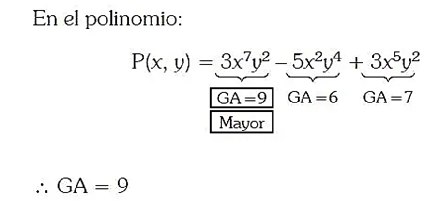
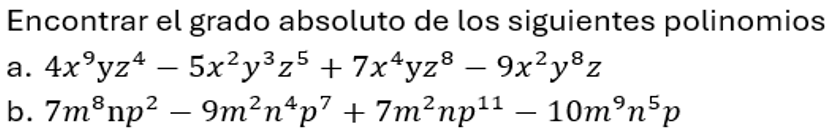
En esta unidad aprenderas sebre lenguaje algebraico. Para esto, encontrarás un video de marco teórico y ejemplificación, y luego unos ejercicios para que practiques por tu cuenta.
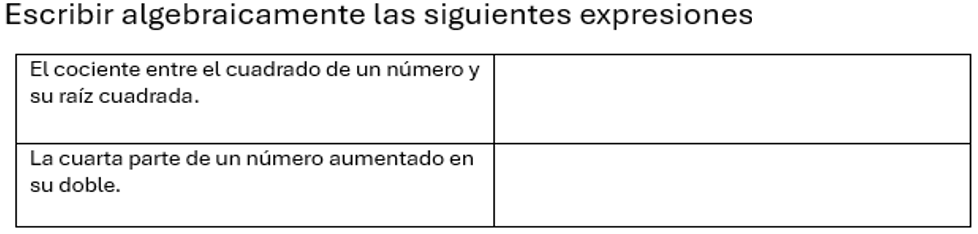
En esta unidad aprenderas cómo hallar el valor numérico de un polinomio. Para esto, encontrarás un marco teórico, un video de ejemplificación y finalmente unos ejercicios para que practiques por tu cuenta.
El valor numérico de un polinomio o de cualquier expresión algebraica es el resultado obtenido cuando se sustituye su variable por un valor determinado y se realizan las operaciones indicadas. En el caso de polinomios con varias variables, su valor numérico se obtendrá a partir de los valores asignados a cada una de ellas y la realización de las operaciones. (Resolviendo primero las potencias, luego los productos y finalmente las sumas y restas de izquierda a derecha).
Ejemplo: El valor numérico de este polinomio, para x = 2 es:
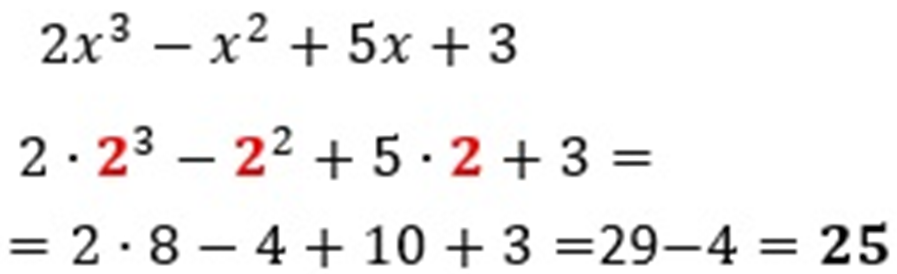
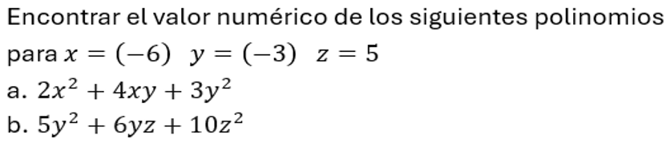
En esta unidad aprenderas a sumar polinomios. Para esto, encontrarás un marco teórico, un video de ejemplificación y finalmente unos ejercicios para que practiques por tu cuenta.
• Para hacer las sumas en vertical debemos:
• Escribir el primer polinomio ordenado. En el caso de que sea incompleto es conveniente colocar un cero con la parte literal que falte.
• Después escribimos el siguiente polinomio debajo del anterior, de manera que coincida justo debajo el término semejante al de arriba.
Ejemplo:
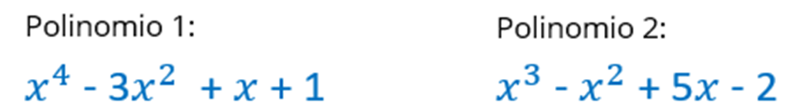
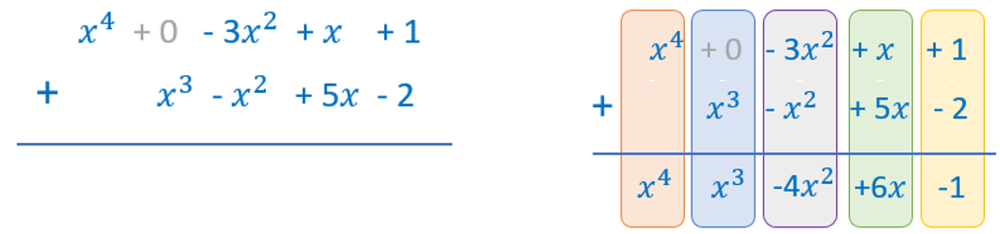
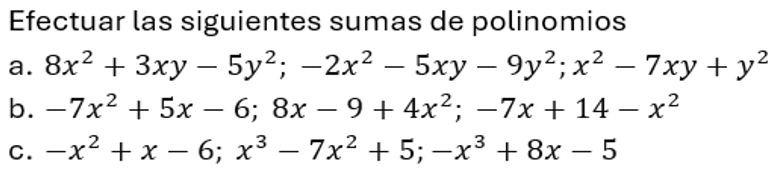
En esta unidad aprenderas a restar polinomios. Para esto, encontrarás un marco teórico, un video de ejemplificación y finalmente unos ejercicios para que practiques por tu cuenta.
•Se debe colocar un polinomio debajo del otro, de manera que los términos semejantes de los dos polinomios estén alineados por columnas.
•Si un polinomio no tiene término de un determinado grado, debemos colocar cero con la parte literal que falte.
•Se debe cambiar de signo a todos los términos del polinomio sustraendo (el polinomio que resta) y luego hacer la suma.
Ejemplo:
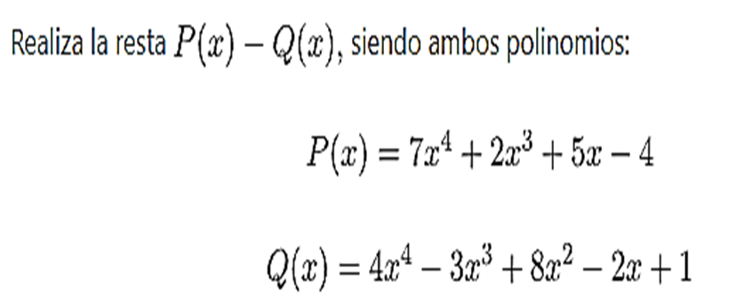
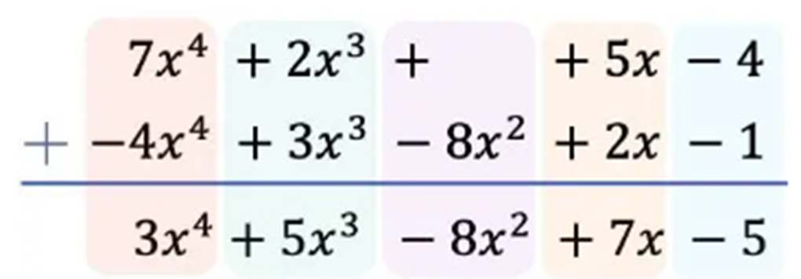
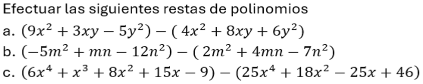
En esta unidad aprenderas a multiplicar un polinomio por un monomio. Para esto, encontrarás un marco teórico, un video de ejemplificación y finalmente unos ejercicios para que practiques por tu cuenta.
Se multiplica el monomio por cada uno de los términos del polinomio. Teniendo en cuenta la ley de signos y la ley de exponentes.
Ejemplo:
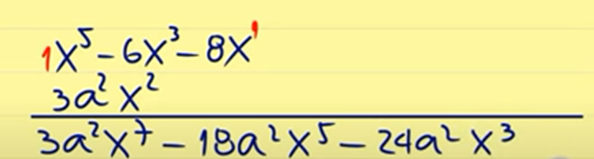
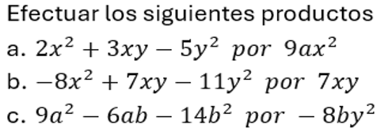
Obra publicada con Licencia Creative Commons Reconocimiento Compartir igual 4.0